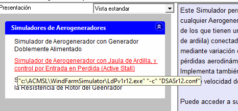
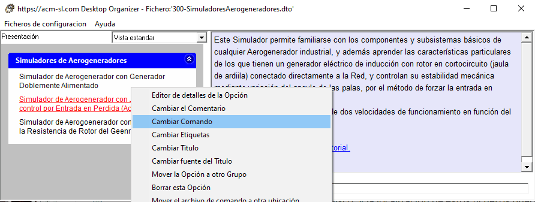
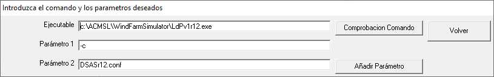

Opciones con referencia a una aplicación con parametros
La invocación de un ejecutable puede requerir parámetros. Además estos parámetros pueden referirse a ficheros en el disco, y la localización de estos ficheros puede que contenga espacios en blanco. Por ejemplo:
"C:\Program Files (x86)\Notepad++\notepad++.exe C:\T mp\test.xml".
El tratamiento de espacios en blanco presenta problemas, ya que el procesador de comandos (parser) utiliza los espacios en blanco para distinguir los distintos componentes del comando, lo que implica que, en el comando anterior, encontrará 4 objetos:
- "C:\Program Files"
- "(x86)\Notepad++\notepad++.exe"
- "C:\T"
- "mp\test.xml"
cuando lo que realmente queremos es que encuentre solo dos:
- "C:\Program Files (x86)\Notepad++\notepad++.exe"
- "C:\T mp\test.xml".
La forma de solventar este problema del procesador de comandos, es englobar cada parámetro problemático entre comillas ("). El comando anterior se debe escribir como:
"C:\Program Files (x86)\Notepad++\notepad++.exe" "C:\T mp\text.xml"
Para facilitar esta especificación de forma cómoda, el Organizador de Estritorio dispone de un formulario específico que facilita esa labor. El siguiente ejemplo muestra su uso:
El mensaje flotante (tooltip) que aparece cuando el ratón se deja un cierto tiempo sobre una Opción, indica el Comando asociado a dicha Opción. Ver siguiente figura.

Si pulsamos el botón derecho del ratón cuando está sobre la Opción, aparecerá el menú flotante siguiente:

Pulsando con el botón izquierdo en la opción del menú "Cambiar Comando" aparecerá el formulario

Puede añadir cualquier número de parámetros mediante el botón "Añadir Parámetro": cada vez que se pulse aparecerá una caja de texto donde puede teclear cualquier texto, que incluso incluya espacios en blanco, pero no el carácter '"'.
El botón "Comprobacion Comando" le permitirá comprobar que la aplicación se ejecuta correctamente de acuerdo con los parámetros introducidos, antes de pulsar "Volver" para retornar a la Vista estandard.
Ejecución de aplicaciones con parámetros